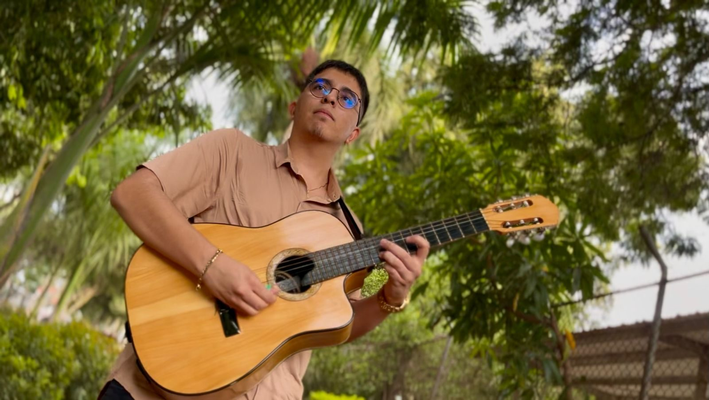
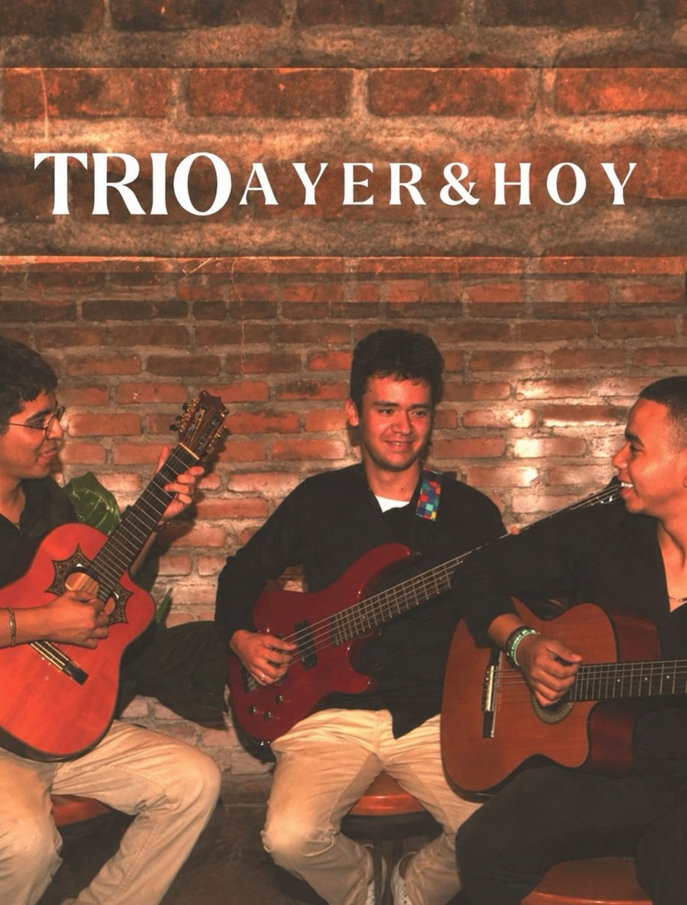

Músico · Requintista · Candelaria, Colombia
Miguel
Delgado
El requinto como esencia, la música como pasión y la humildad como bandera.
Conoce mi historiaContratacionesUna vida dedicada a la música
Tradición que se siente en cada nota.
Desde sus primeros acordes de guitarra en la infancia, Miguel Delgado ha construido un camino musical guiado por el oído, la práctica y el amor por las raíces colombianas.
Leer biografía →
Explora
El universo musical de Miguel

Clases musicales
Clases individuales de guitarra y requinto, presenciales y virtuales.
Conocer clases →
Conoce mi música
Una interpretación, muchas historias.
Disfruta una muestra musical de Miguel Delgado desde su canal de YouTube.
Visitar YouTube